- popraw , wydaje sie jets problem z polskimi znakami
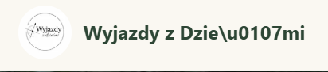
- zmien słówo „zrodił się” na „powstał”
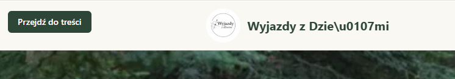
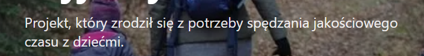
- powieksz logo, zeby było widoczne
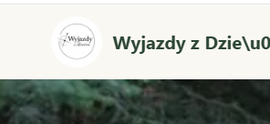
- popraw przycisk „Szczegoły..”, wydaje sie jets problem z polskimi znakami
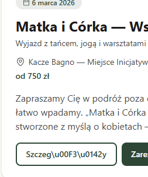
- Problema z polskimi znakami pod „O mnie” + wstaw zdięcie maria_2
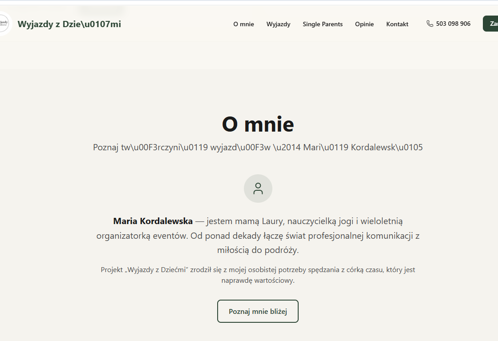
- Poprawic tekst - problema ze znakami
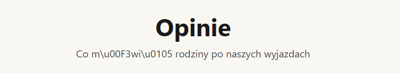
- Dodaj na dole „zapisz sie na newsletter” byc moze obok „pobierz PDF” oraz popraw tekst pod Pobierz darmowy poradnik PDF oraz popraw tekst tam gdzie akceptacja rodo i link oraz popraw tekst w placeholderze „Twój email”
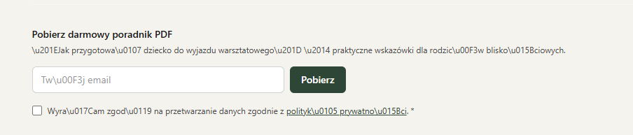
- Dodaj zakłądke blog na górze oraz na dole w stopce
- Kiedy wchodzimy w szcegóły warsztatu , to poraw dwa zreciski „Zapisz sie” - porblem z polskimi znakami ORAZ usun przycisk „Poznaj sczególy”, nie jest on potzrebny, bo juz jesteśmy w szcegółach.

- Jak rozwiązac problem, ze to nie tylko matki z dziecmi ale tez moga byc cioci, babci?
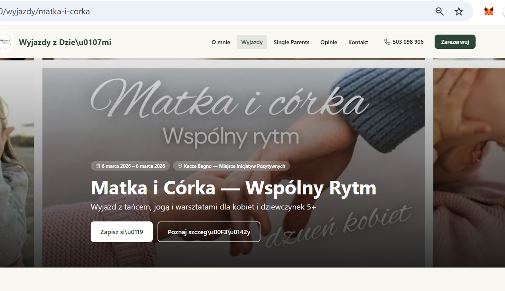
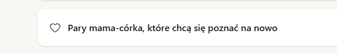
- Popraw problem z polskimi znakami w sekcji szcegoły wyjazdu , tam gdzie cena „Zostało miejsc”, „Zaliczka gwarantuje...”, „Zapisz sie na warsztat”
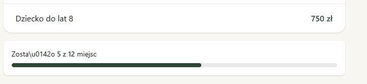
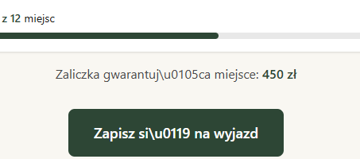
- Usun w sekcji szczegóły warsztatów „Galeria”, a zamiast tego W srodku opisu wyjazdów , dodaj zdecia kilka miedzy opisami, zeby przepłatac z tkstem, zeby utrzymywac uwagę, zeby niebyło za duzo tekstu. Zeby miksowac.
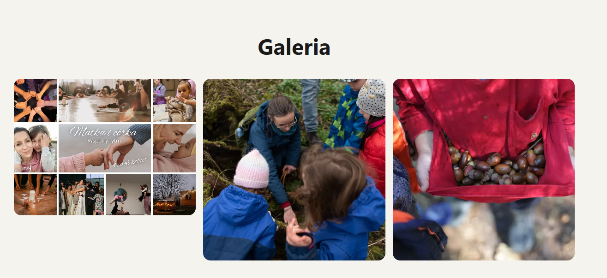
- Popraw słowo „Dorosli” w sekcji szczegóły wyjazdu -> „Zapisz sie na wyjazd”
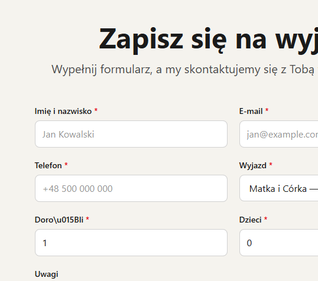
- Zmień nazwę „Single parents” na „Wyjazd z dziećmi” oraz dodaj zdjecia pomiedzy blokami.
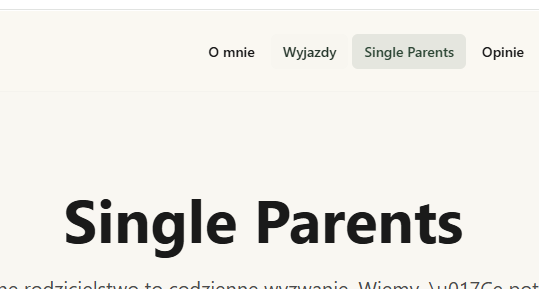
- Dodaj zakładke przed „Single Parents” - „Matka z córką” i opisz ten wyjzd ogólne o co chodzi na tym wyjezdize jak „single parents” : misja, warotsci, dlaczego oraz przycisk „Zobacz wujazdy” oraz dodaj zdjecia pomiedzy blokami. Dodaj tez info, ze to nie tylko dla matek, ale tez dla babc, cioć, koleżanek z córką, która moze pojechać, zeby to było zrozumiało.
- Zaproponuj jak roziwązać problem”
- kiedy jestesmy w sekcji „single parents” i klikamy „Zobacz wyjazdy”, to pzrekierowuje na wszytkie wyjazdy. A my chcemy, zeby rodzice mogli zobaczyc tylko wyjazdy z dziećmi.
- Tak samo w zkaałdce , która będize „Matki z córkami”, zeby kiedy klikną „Zobacz wyjazdy”, mogli widziec tylko wyjazdy dla Matek i córek.
- A wyjazdy ogolne „Wyjazdy”, to tam wzytskie aktywne wyjazdy”
- Dodaj przykłady na stronie „archywilnych wyjazdów’ - | 4 | **Sekcja "Minione wyjazdy" na stronie glownej** | Osobna sekcja (nie tylko karty w grayscale) z krotkim podsumowaniem i zdjecia z minionych wyjazdow. "Zobacz jak wygladaly nasze poprzednie wyjazdy." | Buduje autorytet i historię marki -- "nie jestesmy nowi, mamy doswiadczenie".
- Wweż opis, terminy z tąd. https://www.facebook.com/events/1294298161958856/?acontext=%7B%22event_action_history%22%3A[%7B%22surface%22%3A%22external_search_engine%22%7D%2C%7B%22mechanism%22%3A%22attachment%22%2C%22surface%22%3A%22newsfeed%22%7D]%2C%22ref_notif_type%22%3Anull%7D
- Status "WYPRZEDANY" na minionych wyjazdach — Women's Quest traktuje "SOLD OUT" jako najsilniejszy social proof. Nasze przeszłe wyjazdy (isPast: true, grayscale) mogłyby mieć badge "Zakończony — komplet uczestników".
- NA PRZYKŁĄD - Hub-and-spoke architecture — Blueprint rekomenduje 3 wyraźne karty usług pod hero (Family Adventures / Mother-Daughter / Yoga Retreats). Nasze TripCardsSection już to robi, ale mogłoby być bardziej wyraziste z dedykowanymi ikonami i emocjonalnym opisem dla każdej kategorii.
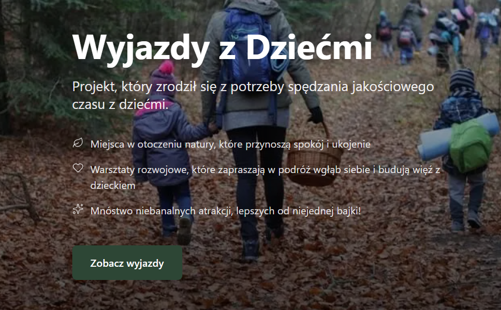
- W zakldce „Wyjazdy” zmien „Wybierz wyjazd i dolącz do nas” na „Wybierz swój wyjazd i dolącz do nas”
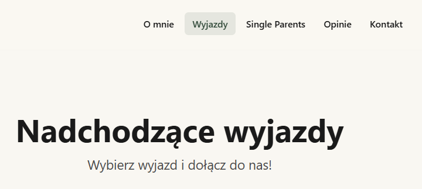
- W sekcji „Wyjazdy” „szcególy - dodaj „co zawiera cena, a czego moz enie zawiera - dojazd na przyklad, zakwatorewoanie’. Przykladowe jak tutaj
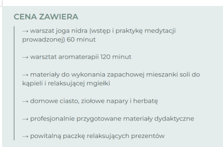
- W sekcji „Kontakt” popraw błedny polskich znaków.
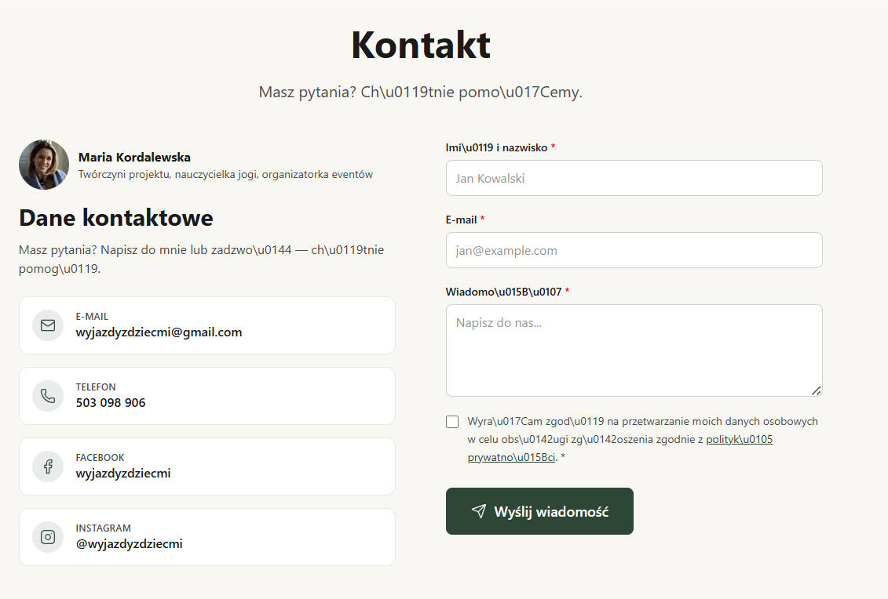
- W zakladce opinie popraw polskie znaki
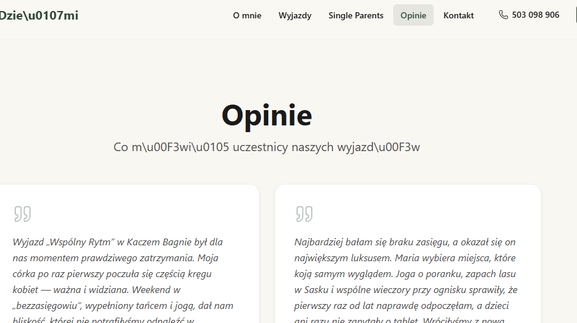
- Oraz przycisk w sekcji OPINIE
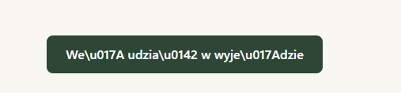
- Popraw, zeby nie wyświetłało sie czerwone wymagane pole na kazdej zakladce, jesli raz klieknełam pobierz bez wypelnienia pol na któryc zakąldce.
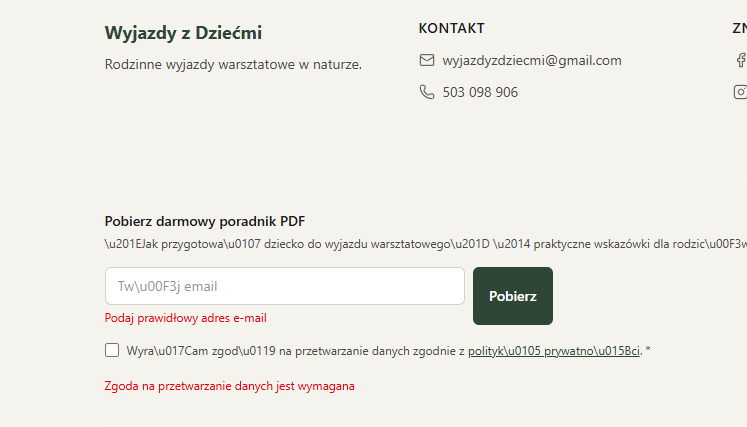
- Zrob tez prosze klikalny napis przy logo „Wyjazd z dziecmi”, a nie tylko logo
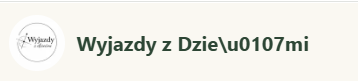
- W sekcje „O mnie „ popraw polskie znaki
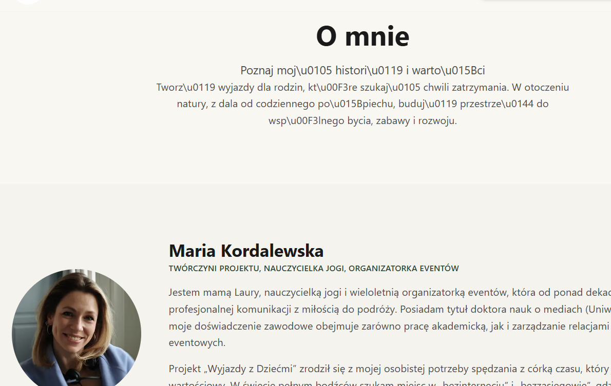
- W sekcji „O mnie” w „Moja misja” popraw tekst pod spodem z problemami polskich znakow
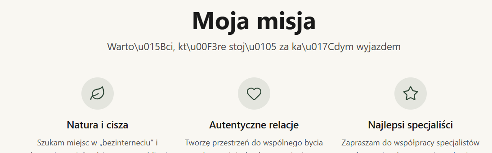
- W sekcji „O mnie” popraw polskie znaki w „wspolpracują ze mną”
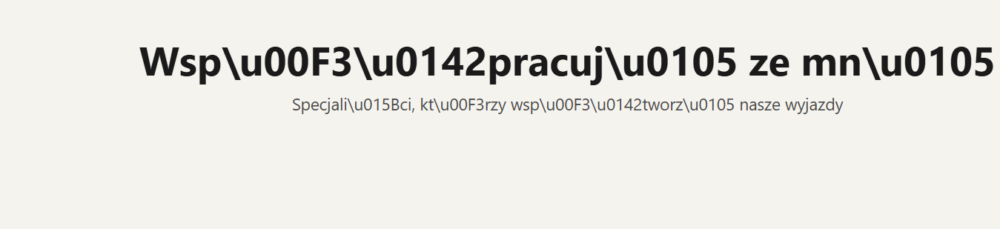
- Popraw polskei znaki w sekcji „o mnie’
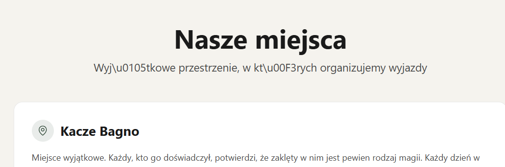
- W sekcji „o mnie” popraw polskie znaki w tytule, w opisei i przysickach
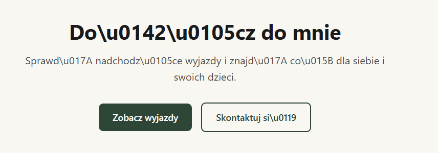